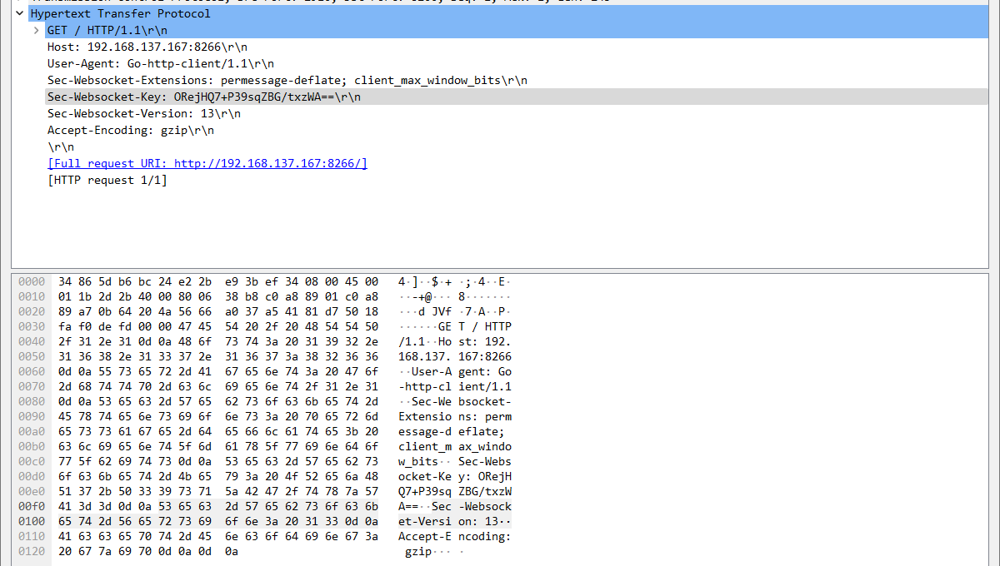
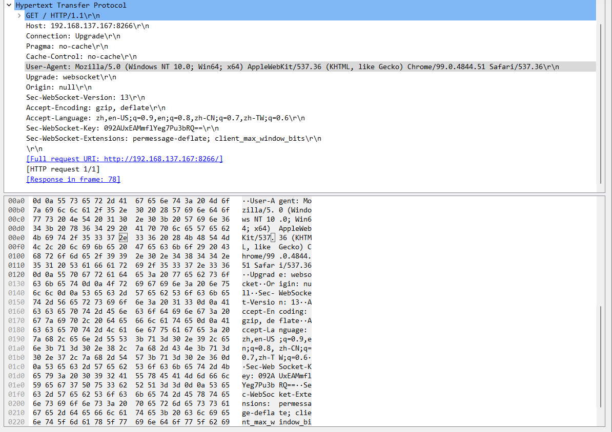

WebSocket Problem with Proxy
I've been working on build a visual studio code extension for a better developing experience on ESP32, MicroPython. But without any basic knowledge for front-end development, this process is quite tough for me.
To establish a wireless connection, the first thing that came into my mind is that I should check the official tools. So I checked the source code of project webrepl, a WebREPL terminal client, which also has a coarse front-end written in Javascript.
Problem
It seemed to be simple to connect to the webrepl server running on the board, as the code in webrepl.html showed. But when I was using the npm package ws or websocket in Typescript to connect to it, the connection was simply cannot be established. The error in the serial connection illustrated that
Traceback (most recent call last):
File "webrepl.py", line 43, in accept_conn
File "websocket_helper.py", line 39, in server_handshakej
OSError: Not a websocket request
WebREPL connection from: ('192.168.137.1', 2935)
At first I thought it was just like the old problems, parameters, policies, etc. So I applied WireShark to check the different between the packets sent by webrepl and the Typescript extension written by myself.
Using the ws package to connect:

Using Javascript WebSocket to conncet to the board:

Having no idea which options to alter, I referred to the MicroPython project to find out. But the code shows that’s nothing to do with the options.
webkey = None
while 1:
l = clr.readline()
if not l:
raise OSError("EOF in headers")
if l == b"\r\n":
break
# sys.stdout.write(l)
h, v = [x.strip() for x in l.split(b":", 1)]
if DEBUG:
print((h, v))
if h == b"Sec-WebSocket-Key":
webkey = v
if not webkey:
raise OSError("Not a websocket request")
But how can webkey == None happen? The two packets both have Sec-WebSocket-Key in their fields.
Solution
Fortunately, one of my teammates found that the client was assigned with Go-client, and it was our proxy server Clash For Windows who modified our packet. And turning off the proxy worked.